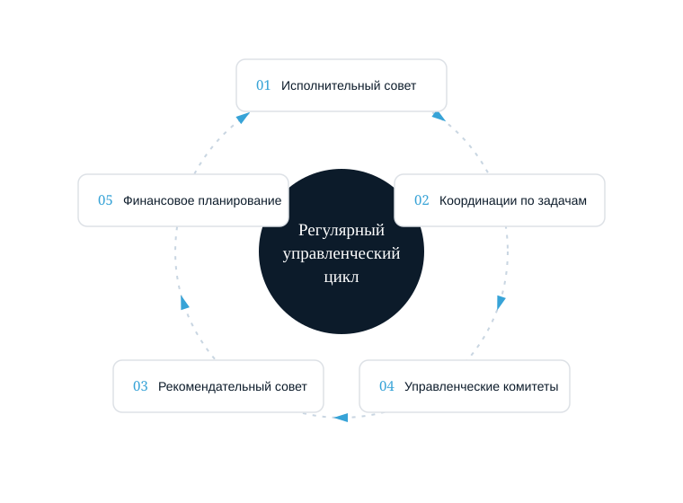
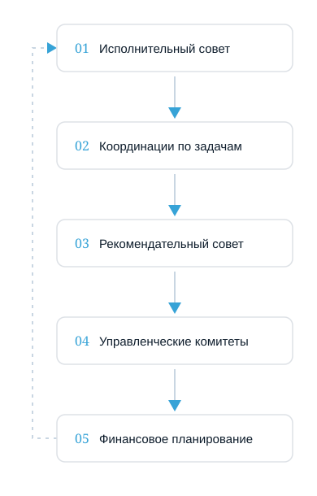
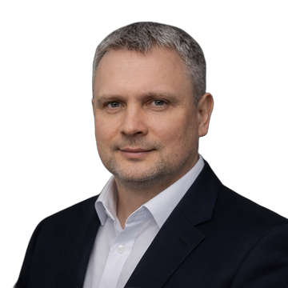

Советник по системному управлению бизнесом
Организация управляемости компании через систему планирования, координаций и управленческих инструментов. Внешний специалист берёт на себя административную функцию управления — собственник управляет через систему, а не через операционные вмешательства.
Рост компании создаёт управленческие вызовы
Рост неизбежно усложняет управление. На определённом этапе собственник сталкивается с проблемой управляемости, которая требует системного решения.
Увеличение персонала
Количество сотрудников растёт, появляются новые подразделения и функциональные направления.
Появление руководителей
Формируются руководители подразделений, каждый со своей зоной ответственности.
Рост задач и проектов
Увеличивается количество задач, проектов и операционных вопросов, требующих решения.
Нагрузка на собственника
Собственник становится центральной точкой принятия решений по всем вопросам.
Без управленческой системы управление начинает замедлять рост. Собственник становится «бутылочным горлышком», через которое проходят все решения.
Как проявляется отсутствие системы управления
Разрозненная работа руководителей
Руководители работают независимо друг от друга, без согласованности действий и общего понимания приоритетов.
Несогласованные планы подразделений
Планы не увязаны между собой — это приводит к конфликтам ресурсов и противоречивым действиям.
Потеря задач и проектов
Задачи теряются или выполняются частично; отсутствует контроль за выполнением управленческих решений.
Операционная вовлечённость собственника
Собственник постоянно вовлечён в операционные вопросы и не имеет времени на стратегическое развитие.
Компания продолжает работать, но управляемость снижается: результаты становятся непредсказуемыми, а собственник превращается в операционного менеджера.
Отсутствие административной функции управления
В большинстве компаний никто системно не отвечает за организацию управленческого процесса. Эту роль вынужденно выполняет собственник.
Все управленческие процессы замыкаются на владельце. Это создаёт управленческое узкое место и блокирует развитие компании.
Советник по системному управлению
Внешний управленческий специалист, который помогает собственнику выстроить административную часть системы управления компанией.
Организация управленческого процесса
Создание регулярного цикла управленческих встреч и координаций.
Внедрение управленческих инструментов
Система планирования, контроля и управленческой отчётности.
Поддержание управленческой дисциплины
Обеспечение выполнения управленческих решений и контроль за результатами.
Что делает советник по системному управлению
Советник отвечает за организацию управленческого процесса компании.
Организация планирования руководителей
Система регулярного планирования деятельности подразделений и согласования планов между руководителями.
Проведение управленческих координаций
Организация и проведение регулярных управленческих встреч, подготовка материалов и фиксация решений.
Анализ управленческих показателей
Отслеживание ключевых показателей эффективности и подготовка аналитических отчётов для собственника.
Внедрение управленческих инструментов
Система управленческой отчётности, планов и других инструментов управления.
Поддержание управленческой дисциплины
Контроль за выполнением управленческих решений и обеспечение управленческой дисциплины в компании.
Регулярный цикл управленческих встреч
В компании организуется регулярный цикл, который обеспечивает согласованную работу руководителей.


Исполнительный совет с собственником
Стратегические решения и утверждение ключевых направлений развития.
Координации по ключевым задачам
Контроль выполнения стратегических инициатив и критически важных проектов.
Рекомендательный совет
Анализ статистик, показателей и подготовка рекомендаций для собственника.
Управленческие комитеты
Координация действий между подразделениями и решение операционных вопросов.
Финансовое планирование
Согласование бюджетов, финансовых планов и контроль за выполнением.
Что меняется после внедрения системы управления
Регулярное планирование
Появляется система регулярного планирования деятельности всех подразделений.
Контроль задач
Задачи фиксируются в системе и контролируются до выполнения.
Согласованная работа
Руководители работают согласованно, понимая общие цели.
Прозрачность результатов
Результаты подразделений становятся прозрачными и измеримыми.
Компания начинает управляться через систему. Собственник получает инструменты для управления бизнесом на расстоянии, не вовлекаясь в операционные детали: управляемая структура, регулярное выполнение планов, прозрачные результаты, снижение операционной нагрузки.
Кто выполняет функцию советника в вашей компании
Над внедрением функции советника работают специалисты по систематизации бизнеса и операционному управлению компании ASM Strategy.

Максим Юрин
Отвечает за координацию руководителей, проведение управленческих координаций, согласование и контроль выполнения планов. Обеспечивает управляемость компании через внедрение оргструктуры, статистик и управленческих инструментов.
Юрий Маракулин
Бизнес-архитектор. Отвечает за технологию и методологию систематизации бизнеса, разрабатывает управленческие технологии и инструменты внедрения, контролирует качество консалтингового продукта.
Управленческая диагностика
Начало работы — диагностическая встреча, которая позволяет понять текущее состояние управления и определить направление систематизации.
Анализ текущей системы управления
Изучение существующих процессов планирования и координации в компании.
Выявление управленческих проблем
Определение ключевых проблем и узких мест в системе управления.
План систематизации
Разработка плана внедрения управленческой системы и определение приоритетов.
Длительность встречи: около 90 минут
Запишитесь на управленческую диагностику
Обсудим текущее состояние управления в вашей компании и определим, как функция советника решит ваши управленческие задачи.